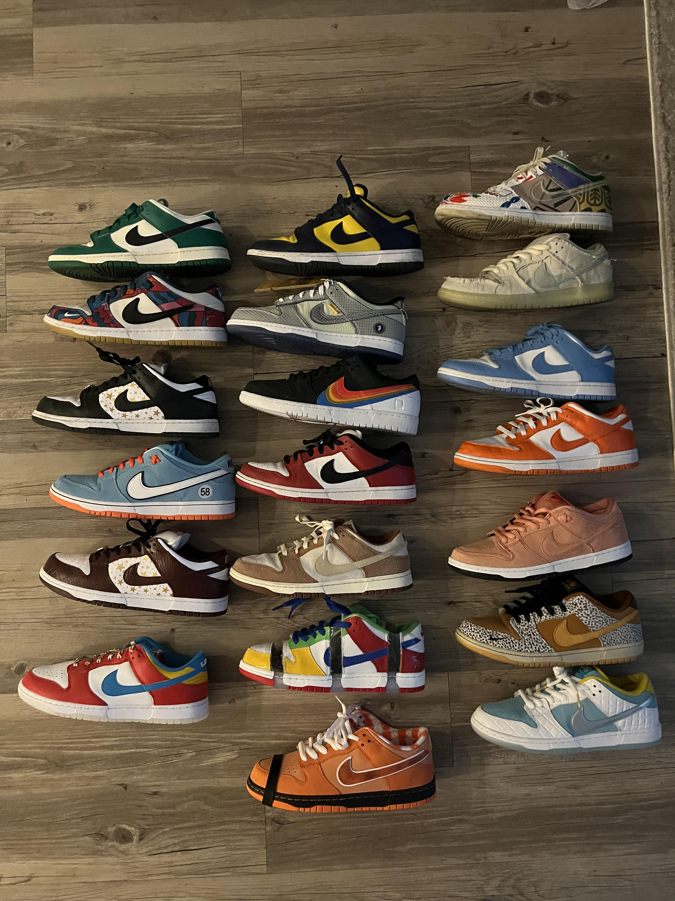

Hobbies
tênis

Eu gosto de tênis exclusivos porque gosto de sentir que não vai ter outra pessoa usando o mesmo tênis que está no meu pé. Usar um par raro ou de edição limitada faz com que eu me sinta único, além de mostrar meu estilo pessoal de uma maneira diferenciada. Para mim, esses tênis não são apenas calçados; eles têm design único, qualidade superior e podem até se tornar itens de coleção, ganhando valor com o tempo. Gosto de fazer parte de um grupo seleto que compartilha essa paixão pela moda e pela cultura sneaker.
Futebol

Eu sempre gostei de futebol, mas isso começou com o meu avó quando me levou para fazer teste no Corinthians, mesmo hoje em dia sendo Palmeirense, mas foi ai que começou a paixão pelo esporte brincando de gol a gol quase todo dia com ele.
Carros
Hoje em dia, eu gosto muito de carros por causa da minha infância. Sempre assistia ao filme *Carros*, e com o tempo, passei a me interessar também por *Speed Racer*, *Velozes e Furiosos* e *Need for Speed*. Além disso, os únicos jogos de videogame que realmente curto jogar são jogos de corrida. Tudo isso contribuiu para a minha paixão por carros que tenho hoje.
Menu:
projetos:
contato: